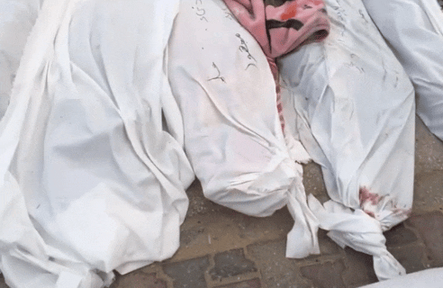
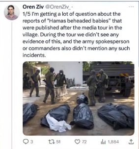
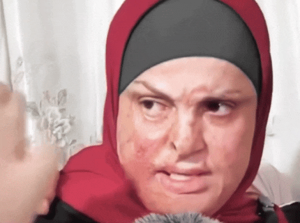

# ادعا 1
# جواب 1
استدلال این ملحد درمورد قرآن رو با همدیگه شنیدیم که قرآن برای فردی که اخلاق مدار هستش نفرت انگیزه اما نظر ایشون درمورد ارتش اسـ*رائیـل چیه ؟
# ادعا 2
# جواب 2
ایشون میگه ارتش اسـ*رائیـل با اخلاق ترین ارتش جهانه ، چرا ؟ چون باعث قـتل و کشـتار بیش از چهل هزار انسان بی گناه شد

قرآن نفرت انگیزه چرا ؟ چون قرآن میگه : هر کسی جان یک انسان رو نجات بده انگار جان همه انسان هارا نجات داده
ارتش اسـ*رائیـل بهترین ارتش جهانه چرا ؟ چون باعث شده هیچ بیمارستانی در غـ*زه نباشه و همه رو بمب باران کرده

اما ارتش اسـ*رائیـل بهترین ارتش جهانه چرا ؟ چون باعث شده 20 هزار کودک به قتل برسند

اما قرآن نفرت انگیزه چرا ؟ چون میگه : احترام پدر و مادراتونو نگه داشته باشید
ارتش اسـ*رائیـل بهترین ارتش جهانه چرا ؟ چون باعث شده 15 هزار زن کشـته بشن
اسلام نفرت انگیزه چرا چون پیامبر اسلام میفرماید : بهترین شما کسی است که بهترین رفتار رو داخل خونه به همسرش داشته باشه
ارتش اسـ*رائیـل بهترین ارتش جهانه چرا ؟ چون باعث شد 2 میلیون انسان تو غـ*زه خونه هاشونو از دست بدن
قضاوت با شما و استدلال و منطق یک ملحد اینه
حالا این آدما چجوری میخان بهتون راه و روش درست زندگی کردن رو یاد بدن ؟
راه و روشه درست زندگی کردن اینا دقیقا مثل ارتش اسـ*رائیـله، قـتل و غـارت
# ادعا و جواب 3 مرتبط به زمان ریاست جمهوری جو بایدن هست یعنی 2023
فلسـ*ـطینی ها اومدن 40 بچه اسـ*رائیـلی سـر بـریدن
سوال اینجاست اجساد این کودکان کجاست ؟ مشخص نیست
تصاویر این جنـایت کجاست ؟ وجود نداره
اسـ*رائیـل حتی به متحدان خودش هم دروغ میگه
جو بایدن رئیس جمهور آمریکا گفته : تصاویری از ســر بـ*ریدن کودکان اسـ*رائیـلی توسط فلسـ*ـطینی هارو دیده
این درحالی است که واشنگتون پست در این مورد گفته بود نتانیاو بایدن رو فریب داده

روزنامه واشنگتون پست به نقل از کاخ سفید اعلام کردکه نه بایدن و نه هیچ مسئول دیگری چنین تصاویری ندیدن و صحت گزارش ها درمورد ســر بـ*ریدن کودکان به دست فلستیطنی ها تایید نمیکنه
سایت اسـ*رائیـل گریتون هم گفته :

شایع ســر بـ*ریدن کودکان توسط یک صهیونیسم افراطی پخش شده این سایت نام رهبر شهرک نشینان فاش کرد که شایعه ســر بـ*ریدن کودکان در شهرک کفارزه در جریان طوفان نقضا رو به راه انداخت
اورن زیو خبرنگار اسـ*رائیـلی میگه در سفری که به کفارزه داشتیم هیچ مدارکی دال بر کشتار کودکان توسط فلسـ*ـطینی ها مشاهده نکردیم
مایع *تعسف* که اسـ*رائیـل از این ادعا های نادرست برای تشدید بمب باران غـ*زه استفاده میکنه
حالا دوست عزیزی که واسه خبر جعلی اینقدر ناراحت شدی آیا میدونی تو غـ*زه بچه هاشون دارن کشته میشن ناراحت نیستی چرا انسانیتت گل نمیکنه و بهت نمیگه هیچ فرقی بین کودک اسـ*رائیـلی و کودک فلسـ*ـطینی وجود نداره
و خواهرم میدونی تو غـ*زه چند زن و دختر توی غـ*زه کشته شدن چرا وجدانت بیدار نمیشه
این مقاله رو اشتراک بزار واسه افرادی که دم از انسانیت میزنن اما چشمشون روی جنایت های متـ*ـجاوزین و نسل ک*ـشی فلسـ*ـطینی ها بستن و برده فکری اسـ*رائیـل و رسانه های اون شدن و هر چرندیات اونا میگن بدون هیچ فکر و تحقیقی باور میکنن
،ای اهل غـ*زه شما نماد افتخارید، شما نماد شرف برای هر مسلمانید، شما نماد ایستادگی برای هر انسانی هستید همانطوری که که خیلی ها با استقامت اهل غـ*زه مسلمان شدند کاری، اخوندا ما کردن چی بود بجز اینکه خیلی ها رو هم از دین زده کردند و خیلی هارا بی دین کردند با عملکردنشون

اما اهل غـ*زه نه با سخن بلکه با عمل خیلی هارو با اسلام زیبای محمدی آشنا کردن اسلام یعنی چی ؟ اسلام یعنی بخشندگی اسلام یعنی مهربانی و نمونه مهربانی رو شما در برخورد با اسرای اسـ*رائیـلی دیدید

اما اسرای مسلمان با چهره های سوخته از زندان های اسـ*رائیـل میومدن بیرون بهتون ظلم شد اما شما به اسرای اسـ*رائیـلی ظلم نکردین چون شما شاگردان مکتب محمد رسول الله هستید
ای اهل غـ*زه همه ما مسلمانان شاگردان دانشگاه اسلامی شما هستیم